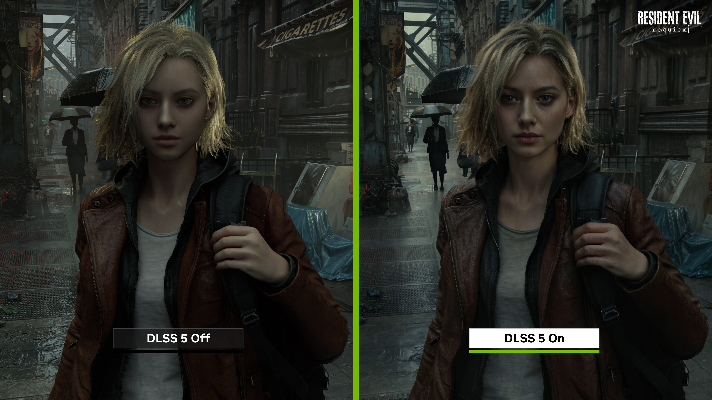

The Evolution of AI
The Origins: From Myth to Machine
The concept of artificial beings endowed with intelligence dates back to ancient history, appearing in the myths of antiquity. However, the modern pursuit of Artificial Intelligence began in earnest in the mid-20th century. Pioneers like Alan Turing laid the theoretical groundwork with his 1950 paper introducing the "Turing Test," questioning whether machines could exhibit intelligent behavior equivalent to, or indistinguishable from, that of a human.
The Dartmouth Conference
The field was formally founded at a conference at Dartmouth College in 1956. Organized by John McCarthy, Marvin Minsky, Nathaniel Rochester, and Claude Shannon, the term "Artificial Intelligence" was officially coined. The attendees, optimistic about the rapid solving of machine intelligence, believed that a machine capable of human-level reasoning could be created within a generation.

The AI Winters
Following initial enthusiasm and funding, the reality of computing limitations set in. The 1970s and late 1980s saw periods known as "AI Winters"—phases where hype vastly exceeded the actual capabilities of the technology. Funding dried up, and progress slowed significantly. The primary roadblocks were limited computing power, a lack of extensive data, and the realization that common sense reasoning was incredibly difficult to program via rigid, rule-based logic.
The Deep Learning Revolution
The turning point for modern AI occurred in the 2010s, driven by three converging factors:
- Big Data: The internet boom produced massive amounts of digital information required to train complex algorithms.
- Hardware Advancements: The repurposing of Graphics Processing Units (GPUs) provided the computational horsepower necessary for heavy mathematical calculations.
- Algorithmic Breakthroughs: "Deep Learning," a subset of machine learning inspired by the human brain's neural networks, proved exceptionally capable at image recognition, natural language processing, and complex problem-solving.
The Generative AI Era
Today, we find ourselves in the era of Generative AI. Models trained on vast corpuses of text and imagery can now create novel, human-like content, write code, and synthesize information at remarkable speeds. As we look to the history of the workplace, these milestones highlight how AI evolved from a philosophical question into the most transformative organizational tool of the 21st century.

Written by: Camilo, Gabriel Tristan L.